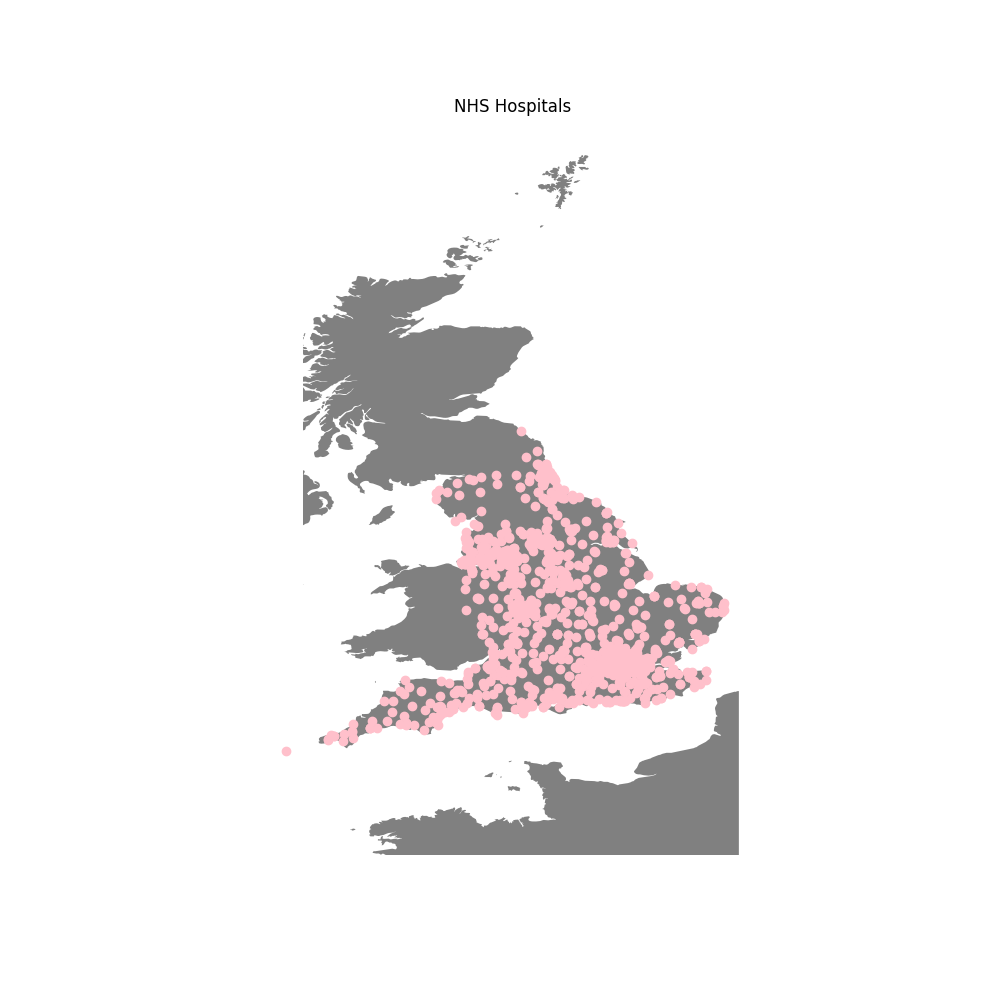

Kaggle Data Set
Datasets on Kaggle's website relating to women's health
Women Health Care
Fetal Health Classification, classify fetal health in order to prevent child and maternal mortality. Each fetal is classified as health of a fetus as Normal, Suspect or Pathological using CTG data
About this dataset, reduction of child mortality is reflected in several of the United Nations' Sustainable Development Goals and is a key indicator of human progress. The UN expects that by 2030, countries end preventable deaths of newborns and children under 5 years of age, with all countries aiming to reduce under‑5 mortality to at least as low as 25 per 1,000 live births.
Parallel to notion of child mortality is of course maternal mortality, which accounts for 295 000 deaths during and following pregnancy and childbirth (as of 2017). The vast majority of these deaths (94%) occurred in low-resource settings, and most could have been prevented.
In light of what was mentioned above, Cardiotocograms (CTGs) are a simple and cost accessible option to assess fetal health, allowing healthcare professionals to take action in order to prevent child and maternal mortality. The equipment itself works by sending ultrasound pulses and reading its response, thus shedding light on fetal heart rate (FHR), fetal movements, uterine contractions and more.
This dataset contains 2126 records of features extracted from Cardiotocogram exams, which were then classified by three expert obstetritians into 3 classes:
- Normal
- Suspect
- Pathological
Create a multiclass model to classify CTG features into the three fetal health states.
Well-being of Women in 52 Countries
Kaggle Well-being of Women in 52 Countries
LivWell is a global longitudinal database which provides a range of key indicators related to women’s socioeconomic status, health and well-being, access to basic services, and demographic outcomes. Data are available at the sub-national level for 52 countries and 447 regions. A total of 134 indicators are based on 199 Demographic and Health Surveys for the period 1990-2019, supplemented by extensive information on socioeconomic and climatic conditions in the respective regions for a total of 190 indicators. The resulting data offer various opportunities for policy-relevant research on gender inequality, inclusive development, and demographic trends at the sub-national level.
Babies Birth Weight
Pregnancies between 1960 and 1967 among women in the San Francisco East Bay area Pregnancies Dataset on Pregnancy, Child, Birth, Mother, Health, Child Weight
The Child Health and Development Studies investigate a range of topics. One study, in particular, considered all pregnancies between 1960 and 1967 among women in the Kaiser Foundation Health Plan in the San Francisco East Bay area. We do not have ideal provenance for these data. For a better documented and more recent dataset on a similar topic with similar variables, see births14. Additionally, Gestation dataset in the mosaicData package also contains similar data.
Breast Cancer EDA
Breast Cancer Wisconsin (Diagnostic) Data Set Data Source: The Dataset is an analysis of the Breast Cancer Wisconsin (Diagnostic) obtained from Kaggle. This data set was created by Dr. William H. Wolberg, physician at the University Of Wisconsin Hospital at Madison, Wisconsin, USA. To create the dataset, Dr. Wolberg used fluid samples taken from patients with solid breast masses and an easy to use graphical computer program called Xcyt, which is capable of performing the analysis of cytological features based on a digital scan. The program uses a curve fitting algorithm to compute ten features from each one of the cells in the sample, then it calculates the mean value , extreme value and standard error of each feature for the image, returning a 30 real-valuated vector.
Cancer occurs when changes called mutations take place in genes that regulate cell growth. The mutations let the cells divide and multiply in an uncontrolled way.
Breast cancer is a cancer that develops in breast cells. Typically, the cancer forms in either the lobules or the ducts of the breast. Lobules are the glands that produce milk, and ducts are the pathways that bring the milk from the glands to the nipple.
Cancer can also occur in the fatty tissue or the fibrous connective tissue within the breast. Signs of breast cancer may include a lump in the breast, a change in breast shape, dimpling of the skin, fluid coming from the nipple, a newly-inverted nipple, or a red or scaly patch of skin.
Risk Factors Of Breast Cancer The Risk factors for developing breast cancer include being female, obesity, a lack of physical exercise, alcoholism, hormone replacement therapy during menopause, ionizing radiation, an early age at first menstruation, having childern late in life or not at all, having prior history of breast cancer, and a family history of breast cancer. The exact cause of breast cancer remains unclear, but some risk factors make it more likely. And it is possible to prevent some of these risk factors.
Age: The risk of breast cancer increases with age.At 20 years, the chance of developing breast cancer in the next decade is 0.06%. By the age of 70 years, this figure goes up to 3.84%.
Genetics: Women who carry certain mutations in the BRCA1 and BRCA2 genes have a higher chance of developng breast cancer, ovarian cancer, or both. People inherit these genes from their parents. Mutations in the TP53 gene also have links to increased breast cancer risk. if a close relative has or had breast cancer, a person's chance of developing breast cancer increases.
Previous History of Breast Cancer: Women who have previously had breast cancer are more likely to have it again than those who have no history of the disease. Having some types of noncancerous breast lump increases the chance of developing cancer later on. Examples include a typical ductal hyperplasia or lobular carcinoma in situ.
Dense Breast Tissue: Women with more dense breasts are more likely to receive a diagnosis of breast cancer.
Estrogen Exposure And Breastfeeding: Extended exposure to estrogen appears to increase the risk of breast cancer. This could be due to a person starting their periods earlier or entering Menopause at a later than average age. Between these times, estrogen levels are higher. Breastfeeding, especially for over 1 year, appears to reduce the chance of developing breast cancer. This is possible due to the drop in estrogen exposure that follows pregnancy and breastfeeding.
Body Weight: Women who become overweight or develop obesity after menopause may also have a higher chance of developing breast cancer, possible due to increased estrogen levels. High sugar intake may also be a factor
Alcohol Consumption: A higher rate of regular alcohol consumption appears to play a role in breast cancer development. According to the National Cancer Institute (NCI), studies have consistently found that women who consume alcohol have a HIGHER RISK of breast cancer than those who do not. Those who drink moderate to heavy levels of alcohol have a higher risk than light drinkers.
Radiation Exposure: Undergoing radiation treatment for a differnt cancer may increase the risk of developing breast cancer later in life.
Hormone Treatments: According to the NCI, studies have shown that oral contraceptives may slightly increase the risk of breast cancer. According to the ACS, studies have found that Hormone replacement therapy (HRT) , specifically estrogen-progesterone therapy (EPT), is related to an Increased Risk of breast cancer.
The uncontrolled cancer cells often invade other healthly breast tissue and can travel to the lymph nodes under the arms. The lymph nodes are a primary pathway that help the cancer cells move to other parts of the body
Breast Cancer python
The data comes from the UCI repository. The data set contains information about breast cancer patients. The variable that we are trying to predict is whether there will be recurrence or not. These are the variables in the data set:
- Class: no-recurrence-events, recurrence-events
- age: 10-19, 20-29, 30-39, 40-49, 50-59, 60-69, 70-79, 80-89, 90-99.
- menopause: lt40, ge40, premeno.
- tumor-size: 0-4, 5-9, 10-14, 15-19, 20-24, 25-29, 30-34, 35-39, 40-44, 45-49, 50-54, 55-59.
- inv-nodes: 0-2, 3-5, 6-8, 9-11, 12-14, 15-17, 18-20, 21-23, 24-26, 27-29, 30-32, 33-35, 36-39.
- node-caps: yes, no.
- deg-malig: 1, 2, 3.
- breast: left, right.
- breast-quad: left-up, left-low, right-up, right-low, central.
- irradiat: yes, no.
Fitbit Tracker
This data set monitors the health of women through various activities.
Cervical Cancer Dataset
Kaggle Cervical Cancer Dataset
Cervical cancer is one of the leading causes of cancer-related deaths among women worldwide. Early detection and accurate prediction of cervical cancer can significantly improve the chances of successful treatment and save lives. This dataset help to develop a predictive model using machine learning techniques to identify individuals at high risk of cervical cancer, allowing for timely intervention and medical care.
Worldwide cancer data
the Global cancer statistics for the most common cancers in the world. There were an estimated 18.1 million cancer cases around the world in 2020. Of these, 9.3 million cases were in men and 8.8 million in women. The most common cancers globally are listed in the tables below.
Global cancer incidence: both sexes Breast and lung cancers were the most common cancers worldwide, contributing 12.5% and 12.2% of the total number of new cases diagnosed in 2020. Colorectal cancer was the third most common cancer with 1.9 million new cases in 2020, contributing 10.7% of new cases.
Global cancer incidence in Males Lung cancer was the most common cancer in men worldwide, contributing 15.4% of the total number of new cases diagnosed in 2020. The top three – lung, prostate and colorectal cancers – contributed 41.9% of all cancers ( (excluding non-melanoma skin cancer). Other common cancers contributing more than 5% were stomach and liver.
Global cancer incidence in Females Breast cancer was the most common cancer in women worldwide, contributing 25.8% of the total number of new cases diagnosed in 2020. The top three – breast, colorectal and lung cancers – contributed 44.5% of all cancers (excluding non-melanoma skin cancer). Cervical cancer was the fourth most common cancer in women, contributing 6.9% of the total number of new cases diagnosed in 2020.
UK NHS Hospital Database
Includes Geospatial Data
This dataset is the complete UK NHS (National Health Service) Hospital Database including geospatial data.
